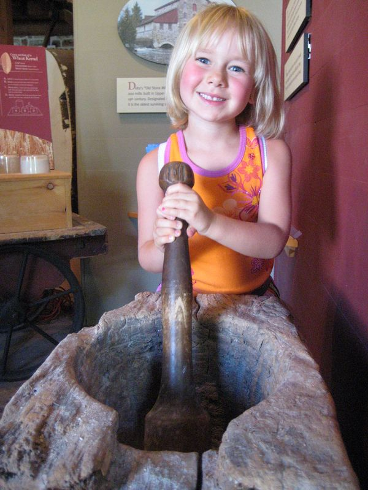

Old Stone
Mill
A history told in stone, water, and flour —
from the first settlement to the present day.


Two hundred and fifteen years have passed since the first stone was set at the bend of the Lower Beverley.
The Old Stone Mill in Delta, Ontario, is more than a building. It is the reason a village exists. Built in 1810 on the bedrock above the creek, it drew settlers, sustained families, and shaped the landscape of eastern Ontario for a century and a half. Today it stands as the oldest surviving stone grist mill in the province — still operational, still grinding grain as it has for over two hundred years.
A loyalist,
an axe,
and an acre.
In February 1794, Abel Stevens arrived at the unsurveyed territory above the Beverley Lakes. A Vermont-born loyalist, he squatted on the upper reaches of Plum Hollow Creek, one of the first Europeans to lay claim to land in this part of eastern Ontario. On June 2, 1796, he received 700 acres — lots 23, 24, and 25 — in formal grant.
Within months, Stevens had built a wooden sawmill on the creek, diverting water from Upper Beverley Lake. His dam raised the water level four to five feet, creating the conditions not just for milling, but for a village. By 1797, the site was already recorded on maps as "Wm. Stevens Mill." By 1808, a second sawmill stood on Foundry Creek nearby.
The village that grew around the mill went by several names — Stevens Mills, then Beverley — before settling on Delta in 1857, named for the triangular shape of the two Beverley Lakes that surrounded it, recalling the Greek letter delta.

"Unquestionably the best building of the kind in Upper Canada."Contemporary assessment, 1817
William Jones
builds for
the ages.
After 1800, the mill property passed from Abel Stevens to William Jones, a member of a prominent local family. Jones saw the limitations of the original wooden mill and conceived something far more ambitious: a permanent stone structure built to last generations.
In 1810, Jones and his business partner Ira Schofield began construction. The result was a three-and-a-half-storey Georgian mill built directly on bedrock, north of Stevens' original wooden structure. Its stone walls, segmental double-hung windows, and recessed center doorway spoke an architectural language of permanence and refinement unusual for the frontier settlements of Upper Canada.
Crucially, Jones did not simply build a traditional mill. He based its design on the principles of American inventor Oliver Evans, whose landmark 1795 publication described the world's first fully automated flour-milling system. Where most mills required millers to carry grain by hand between floors, the stone mill at Delta moved grain automatically — by bucket elevator, hopper, and gravity — from millstone to bolter to finished flour. It was among the most technologically advanced milling operations in the province.

The mill
made one lake
from two.
The geography of Delta, Ontario was not simply found. It was made. Abel Stevens' original dam raised the water level of Upper Beverley Lake by four to five feet, diverting it along a race toward his wooden mill. When William Jones built the stone mill directly above on bedrock, it served in part as its own dam — raising water a further nine feet.
The cumulative effect was transformative. Where there had once been two distinct Beverley Lakes — Upper and Lower — the raised water merged them into one continuous body. The shape of that lake, viewed from high ground, resembles a triangle. In 1857, when the village needed a new name for its post office, Delta was chosen: the fourth letter of the Greek alphabet, always drawn as a triangle.
The mill did not simply grind grain. It reshaped the land, renamed the water, and gave the village its identity.


At the stone,
season after season.
The Old Stone Mill operated continuously for one hundred and fifty years. Through the settlement era, through Confederation, through two world wars, the millstones turned. Farmers brought grain from across Leeds County — wheat, rye, buckwheat, corn — and left with flour, meal, and feed.
In 1850, Walter H. Denaut purchased the mill from Amelia Macdonell and invested heavily in its modernisation. In 1860, the original waterwheel was replaced with cast-iron turbines housed in a new turbine shed — the mill kept pace with industrial progress without abandoning its stone walls. In 1893, roller-milling machinery was installed, converting the operation to a merchant mill capable of producing finer-grade flour for commercial markets.
The millstones themselves — the great French burrstones that ground the grain — were two centuries old when the mill finally ceased commercial operation in 1960. They remain in place today, silent witnesses to every harvest the valley ever knew.


Where the mill
stood,
a village followed.
A grist mill in the early nineteenth century was not merely a place to grind grain. It was an anchor — an economic nucleus around which every other trade and service gathered. By the time William Jones' stone mill was declared "the best building of the kind in Upper Canada," Delta had grown into a thriving village.
Smithies, general stores, hotels, a tannery, a distillery, a foundry, a brickyard, and a cheese factory all came to cluster around the mill's gravity. The mill created not just a built economy but a social one: the adjacent horse shed served at various times as a courthouse and a schoolroom; a concert hall nearby became the Museum of Industrial Technology.
By 1851, Delta's population had reached 250. By 1897, it was approaching 500. The Brockville, Westport & Sault Ste Marie Railway reached the village in 1888, connecting the mill to wider markets and giving Delta one of the larger station buildings on the line. When the railway withdrew in 1952, the era of the commercial mill was already drawing to a close.
Sixty years
of quiet
stewardship.
When the mill ceased commercial operation, its fate was uncertain. The building, the machinery, the millstones — all of it faced the slow erosion of neglect. Then, in 1963, a small group of people decided otherwise.
The property was transferred to four local trustees for the sum of one dollar. From this arrangement, the Delta Mill Society was born — an all-volunteer organisation with a single mandate: to preserve the mill and restore it to working operation as a museum of milling technology.
Over the following decades, the Society invested more than two million dollars in the mill's restoration. In 1970, the federal government recognised the site as a National Historic Site of Canada. Between 1999 and 2004, a major conservation rehabilitation programme addressed the structural fabric of the building — the stone walls, the timber frames, the turbine shed — while keeping the original machinery intact.
Today the mill is fully operational. Its waterwheel turns. Its millstones grind heritage Red Fife wheat into flour. Guided tours run through the summer months, and visitors can follow the journey of grain from the hopper to the bolter to the flour bag — exactly as it moved two hundred years ago.

The stone endures.
So does the work.
The Old Stone Mill opens each summer, welcoming visitors to tour its floors, watch its waterwheel turn, and see its millstones grind grain as they have since 1810. The adjacent Blacksmith Shop — recently restored — operates during special events, including the Delta Harvest Festival each September. Together, the two buildings stand as living testimony to the craft, community, and quiet endurance that built this part of eastern Ontario.


Visit the mill
this September.
On 26–27 September 2026, the Old Stone Mill comes alive with milling demonstrations, blacksmithing, music, and community.